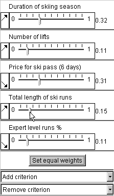
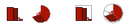
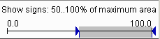
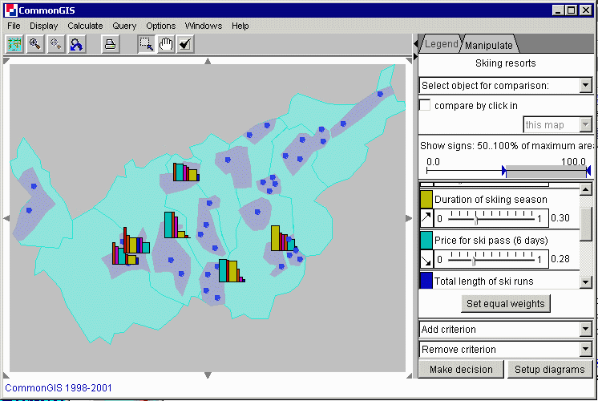
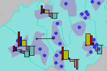
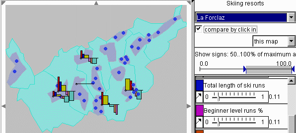
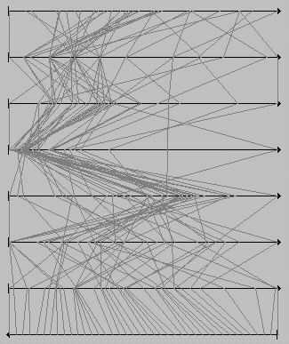
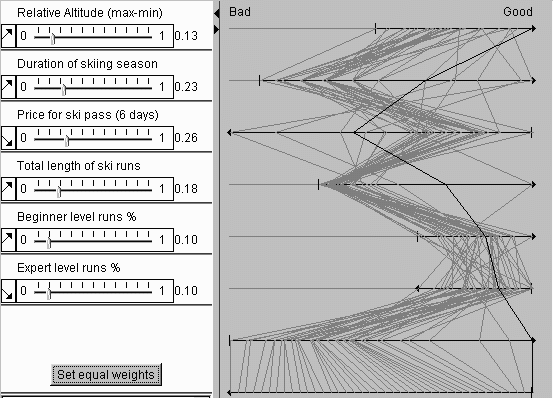
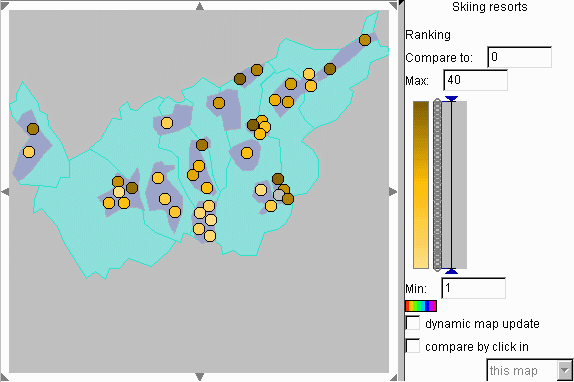
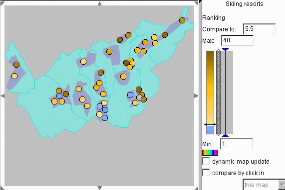

Decision making with Descartes
Contents
- General notes and explanation of relevant
concepts
- How to start the "Ideal point"
method
- How to get "Utility bars" or "Utility
wheels" presentation
- The interface for setting types and weights of
criteria
- "Utility signs"
- Focusing on best options
- Visual comparison of options using
"Utility bars"
- How to do "visual
comparison"
- "Ideal point" method
In Descartes there are 3 tools for decision support:
In decision making a person deals with options characterized by a
number of attributes. Some of these attributes can be used as decision
criteria. Descartes assumes that criteria are always numeric attributes.
Hence, if you wish to use a qualitative attribute as a criterion, you should
specify an order of preference among its values and encode the values by
numbers like 1, 2, 3, ... or -1, 0, 1.
There are 2 types of criteria:
benefit criteria and cost criteria. If higher attribute values make an option
better (more appropriate), this attribute is a benefit criterion. If
higher attribute values are less desirable (less appropriate) than lower ones,
this is a cost criterion.
Criteria may have different relative
importance for a decision maker. In Descartes relative importance of criteria
is specified through so-called weights of criteria. Weights are real
numbers between 0 and 1. The sum of weights of all criteria used in the
decision-making process is always equal to 1. The weight 0 means that the
corresponding criterion is of no importance for the decision maker.
Options can be spatially distributed. Descartes shows locations of such
options on maps.
How to start the "Ideal point" method
- In the menu bar of the main window of the system select the menu
item "Calculate"
- If there are two or more tables available, you will be asked to
select the table for calculations. Select the table containing the
options.
- A dialog will start proposing you to select attributes. Select the
attributes that you will use as decision criteria. For this purpose double
click in the left list or select an item in the left list and press the "east"
arrow button. This operation puts the attribute in the list on the right. To
deselect an attribute, double click it in the right list or select an item in
the right list and press the "west" arrow button. When all necessary attributes
are selected, press the button "OK".
- Depending on the configuration of the system, you may be
additionally asked to select a calculation method. Select the method
"Integrated criterion" in the proposed list of methods. In a simplified
configuration the "Ideal point" method will be selected automatically.
- The system will add to the table two attributes "Evaluation score"
and "Ranking" and propose you to edit the names of these attributes. Usually
you do not need to do this. If you like, you can enter new names in the fields
with the automatically generated names. After finishing press "OK". If you do
not edit the names, simply press "OK".
- You will get a window of the "Ideal point" method. Simultaneously,
the default ranking produced by the system is represented on the map. Use the
left part of the "Ideal point" method window to set the
types and relative importance (weights) of the criteria. All changes you
make will immediately affect the map.
Goto beginning
How to get "Utility Bars" or "Utility
Wheels" presentation
- In the menu bar of the main window of the system select the item
"Display" and then in the menu that opens select "Display wizard".
- If there are two or more tables available, you will be asked to
select the table for visualisation. Select the table containing the
options.
- A dialog will start proposing you to select attributes. Select the
attributes that you will use as decision criteria. For this purpose double
click in the left list or select an item in the left list and press the "east"
arrow button. This operation puts the attribute in the list on the right. To
deselect an attribute, double click it in the right list or select an item in
the right list and press the "west" arrow button. When all necessary attributes
are selected, press the button "OK".
- A dialog will appear proposing you to select the visualisation
method. Select "utility bars" or "utility wheels" and press "OK".
- The selected attributes will be represented on the map using the
"Utility bars" or "Utility wheels" method. At the
same time in a subwindow on the right of the map a new tab appears called
"Manipulate". In this tab, in particular, you can set the
types and relative importance (weights) of the criteria. All changes you
make will immediately affect the map.
Goto beginning
The interface for setting types and relative
weights of criteria
All the decision support instruments we propose allow
the user to indicate the type of each criterion and to specify relative
importance (weights) of criteria. The user interface to specify types and
weights of decision criteria is shown in the figure.

The arrows indicate and allow the user to
specify criteria types. The North-East pointing
arrow, to the left of each weight slider, indicates a benefit criterion, the
South-East pointing arrow corresponds to a cost criterion. Initially the system
assumes all criteria to be benefit criteria. To change the default
directionality of a criterion to the actual one, click on the corresponding
arrow with the mouse. Mouse click changes North-East arrow to South-East and
vice versa.
Below each criterion name there is a slider allowing the user to
select/adjust the criterion weight within the
value range (0, 1). To change the weight of a criterion, drag the corresponding
slider along the horizontal axis. The adjustment of one weight causes all other
weights to automatically change values proportionally to their values before
the adjustment in order to keep the sum of weights equal to 1.
Goto beginning
Utility signs
"Utility signs" support
visual evaluation of spatially distributed options and search for suitable
options on a map. In Descartes there are two variants of utility signs: utility
bar charts and utility wheels.

A utility sign consists of several graphical elements
(see the figure above): bars in utility bar charts and circle segments in
utility wheels. Each element corresponds to one of the attributes under
consideration (decision criterion). One dimension of an element (height in a
bar and radius in a circle segment) represents the value of the attribute for
the object this sign stands for. When the attribute is a benefit criterion, the
size is proportional to the value, for a cost criterion the inverse proportion
is kept. Hence, better values are always represented by bigger sizes. The other
dimension (width in a bar and angle in a circle segment) represents the
importance of the criterion. When the user interactively changes the weights of
the criteria, the signs on the map are immediately redrawn.
By the
construction of a sign, the total area of all its elements shows approximately
the “goodness”, or utility, of the object this sign stands for.
Hence, a decision maker needs to look on the map for signs with largest areas.
To simplify estimation of areas of utility signs and, thereby, visual
evaluation of options, the signs can be supplemented with frames showing the
maximum area (see the above figure on the right). This area corresponds to best
possible values of all the attributes.
Goto beginning
Focusing on best options
To facilitate
visual searching for best options on the map, there is an interactive control
(on the right of the map, in the "Manipulate" tab) that allows the user to
remove from view the signs with areas smaller than a specified threshold (in
percents to the maximum possible area). For this purpose the user needs to drag
the left triangle in the control (see below) to the right.

Thus, the map in
the figure below includes only signs with areas no less than 50% of the maximum
possible area. Note that manipulation of weights of the
criteria changes areas of the signs and therefore can make some of the
currently visible signs disappear and some of the hidden signs become visible.

Goto beginning
Visual comparison of options using
"Utility bars"
You can compare utility (degree of suitability) of options
represented by "utility bars" using the "visual comparison" operation.

In the
"visual comparison" mode (see the picture above) one option is interactively
selected as a reference option. It is represented on the map by a horizontal
line. The remaining options are shown in a special way: a value of an attribute
for an option is shown by an upward-oriented bar if this value is more
preferable than the value of this attribute for the reference option. Less
preferable values are shown by downward-oriented bars. Note that higher
attribute values are more preferable if the attribute is a
benefit criterion and less preferable if it is a
cost criterion. The heights of the bars show the
degree of preference. The widths of the bars, as usual, are proportional to the
relative importances (weights) of the criteria.
Goto beginning
How to do "visual comparison"?
There are two ways of doing visual comparison.
1) On the right of the map, in the "Manipulation" tab there is a
drop-down list with the names of the options. Initially, the text "Select
object for comparison" is visible. When you press the arrow button on the right
of it, you get the whole list and can select an option from it. After the
selection the name of the reference (i.e. selected) option will be shown (see
below).

2) Comparison by clicking on an object in the map. Below the
drop-down list of options in the "Manipulation" area there is a check box
"compare by click in" (see above). Check this check box. After this, when you
click on an option in the map, it becomes the reference object for comparison,
and the map is immediately redrawn. The name of the option is shown in the
header of the drop-down list of options. When you click in an object-free area,
the reference object is deselected, and the bar charts are drawn in their
"normal" mode.
Below the check box "compare by click in" there is a drop-down list in
which you can select between "this map" (default selection) and "any display".
When you select "any display", the visual comparison tool will react to click
in any display opened in Descartes (e.g. another map, scatter plot, etc.).
Goto beginning
"Ideal point" method
Descartes can
compute aggregated scores of options from multiple criteria according to the
so-called “Ideal point” method known in the decision-making theory.
Like "Utility signs", the method uses the weights assigned to the criteria by the decision
maker. The interface for setting the weights is the
same as for the "Utility signs". Results of computation are represented on the
parallel coordinate plot together with the source data.
Parallel coordinate plot
A "parallel
coordinate plot" is applied when it is necessary to consider simultaneously
multiple attributes (usually more than two). It includes several horizontal
axes, one axis per each attribute under consideration. The length of an axis
represents the value range of the corresponding attribute. Hence, an attribute
value can be represented by a position on the axis. An object is represented by
a broken line ("value path") connecting the positions on the neighboring axes
corresponding to the attribute values for this objects (see the picture below).

In Descartes the parallel coordinate plot display is dynamically linked
with maps and other displays. When the user points with the mouse on some
option represented in the map, the respective object is highlighted in the map,
and the corresponding value path is highlighted in the parallel coordinate
plot. And vice versa, the user may point at some line segment in the plot, and
the whole value path becomes highlighted as well as the position of the
corresponding option in the map. Such value path/map integration makes it easy
to evaluate any option with regard to all the criteria. Additionally, the user
may “fix” highlighting by clicking on an object in the map or on a
line in the plot. The selected object remains highlighted when the mouse cursor
moves out of the display or points at other objects. This enables the
comparison of value paths of two or more decision options. The fixed
highlighting differs in color from transient highlighting (black and white,
respectively).
A parallel coordinate plot display used for decision support is
specifically constructed to account for peculiarities of decision making tasks:
different directions of criteria (benefit or cost) and variation of weights. In
the variants of the parallel coordinates plot we propose for decision making
the axes for benefit and cost criteria have different orientation: left to
right vs. right to left. The orientation is indicated by arrows. With such a
solution, the best values of each attribute are always on the right, and the
worst on the left. This makes it easy to estimate visually how good any
specific option is: the closer to the right edge of the plot is a line, the
better is the option.
Difference in relative weights of criteria can be reflected by variation
of lengths of the axes: the more important is a criterion, the longer is the
corresponding axis (see the picture below). Due to this transformation lines of
options surpassing others in more important criteria shift visually more to the
right (“good”) pole of the plot.

Besides the
characteristics of the options with respect to the criteria, the parallel
coordinate plot in the "Ideal point" dialog shows also the results of
computation: the summary evaluation scores of the options (given the current
weights of the criteria) and the ranking (order) of the options according to
the scores. The scores and the ranking are represented on the bottom two axes
of the plot: the scores on the axis second from the bottom, and the ranking on
the bottom axis. The score axis is oriented from left to right since higher
scores are better, and the ranking axis - from right to left (the best option
is the first in ranking, and the worst is the last). Such a display
significantly helps in understanding and verification of the outcome of
automatic evaluation. It also allows interactive analysis of sensitivity of the
aggregated scores to changes of the weights. When the user alters any of the
weights, the scores are immediately re-computed, and the results are reflected
in the plot.
Goto beginning
Link between the "Ideal point" dialog and the map
When the "Ideal
point" dialog is started, the results of calculations by the "Ideal point"
method (specifically, the ranking of the options) are immediately represented
on the map, and the map dynamically reacts to all changes within the dialog
(weights, directionality of criteria, adding/removing criteria, etc.)
There are two methods that can be used to represent ranking:
- Proportional degrees of darkness
- Classification map
Which of the methods is used, depends on the state of the check box
"Classify results" in the "Ideal point" dialog. When the check box is
"checked", classification is used, otherwise the proportional degrees of
darkness method.
Representation of ranking by proportional degrees of darkness
In
this representation method values of a numeric attribute are encoded by
proportional degrees of darkness: the higher the value, the darker the shade
representing it. Hence, better options (with small values of the "ranking"
attribute) are lighter, and less preferable options are darker (see below).

A
double-sided, or diverging, color scale may be used in order to differentiate
visually values above and below certain reference value (midpoint): they are
represented by shades of two different colors, for example, brown and blue. A
special color, for example, white, represents values exactly equal to the
reference value. The system gives you an opportunity to change interactively
the reference value and to observe immediately how this affects the map. This
operation (called "visual comparison") can facilitate comparison of options and
visual detection of the best options. For example, by setting the reference
value to 5.5 (or any number between 5 and 6) you visually isolate 5 best
options from the rest: they will be shown in a different color, by default, in
blue (see below).

There are multiple opportunities for interactive selection of the
midpoint:
- Gradually drag the slider (a double-ended arrow in the colored bar
in the manipulation area) up or down. To make the arrow appear, click somewhere
within the colored bar. If you wish the map to update dynamically while you are
moving the slider, "check" the check box called "dynamic map update", otherwise
the map will be only updated when you finish dragging.
- Enter the value in the text edit field entitled "Compare to" (above
the slider bar) and press "Enter" button.
- To compare an object with others, click on it in the map. The value
associated with this object becomes the reference value. The objects with
higher values will be painted into brown, and the objects with lower values in
blue. The object itself will be white. This operation is possible when the
check box "compare by click in" is on.
Goto beginning
Back to contents